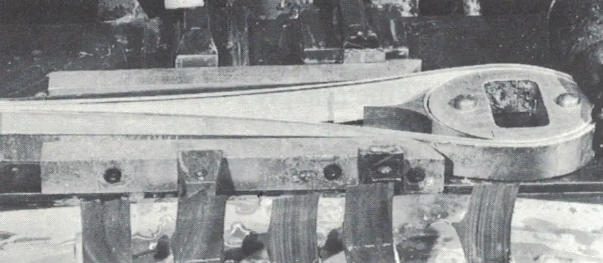
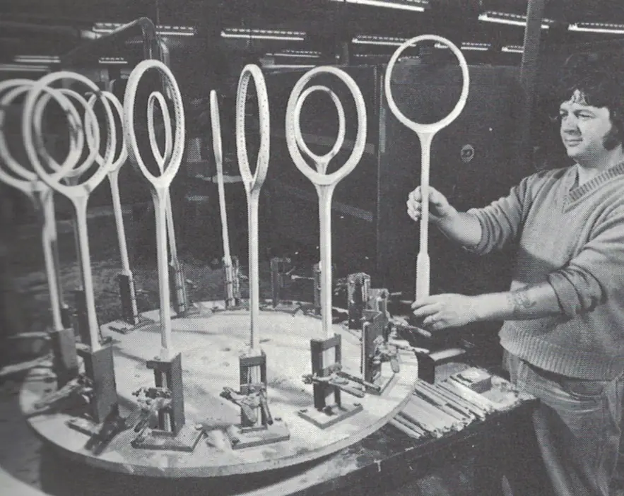
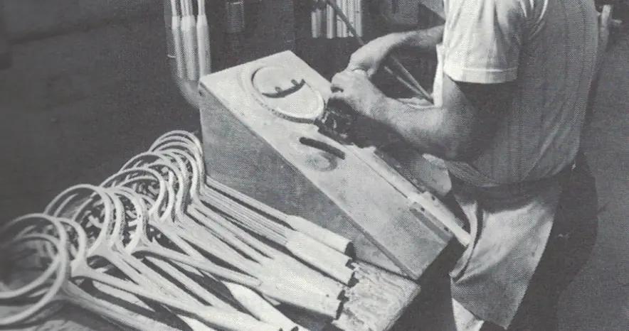
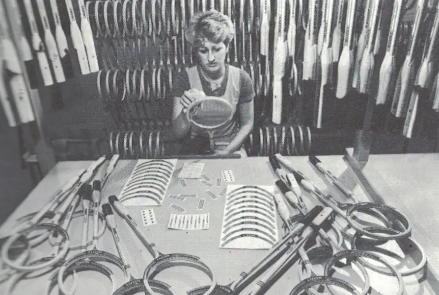
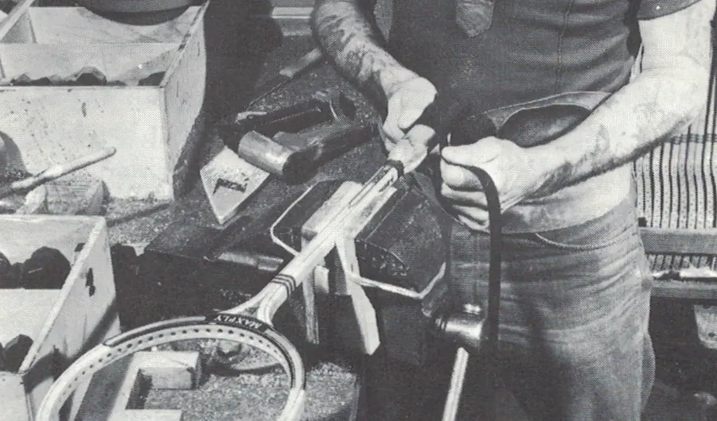
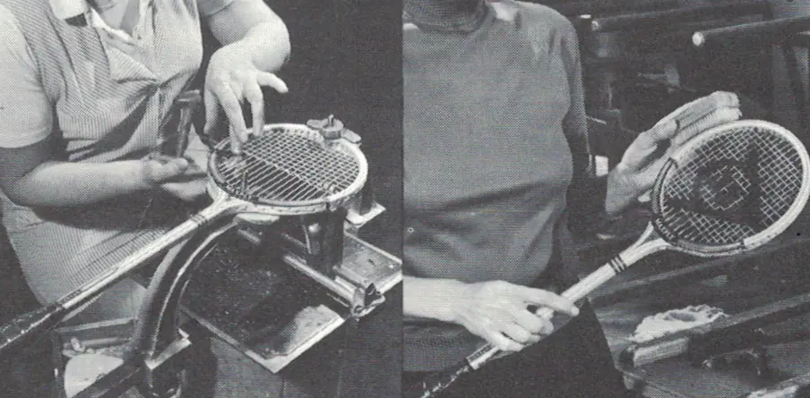

How Were Wooden Squash Rackets Made?
For older readers, thinking about wooden rackets may bring back some fond memories of heavy but beautiful rackets. For younger readers, the idea of such a cumbersome piece of equipment is almost laughable.
Nowadays, graphite rackets are very light and powerful. The power comes from the strength of the materials, which mean we have much larger heads. Picking up and playing with a wooden racket should give you an appreciation for the skills and strength professional players from the 60’s and 70’s had. I thought it might be interesting for you to learn a little of how those wooden rackets were made. The details below are meant solely as a guide and omit some minor processes.
Even though I did work for Dunlop Slazenger for a few years, unfortunately production of wooden rackets had stopped before I started. I would have loved to see the craftsmen, and maybe craftswomen in action. Talking of which, in a few years there might not be anybody left alive who actually made wooden rackets. The art, might be dead.
Let’s Start With The Woods
Different types of woods were used in different parts of the racket. Specifically, the wood used in the head might be different from the throat or shaft. Instead of using one piece of thick wood, each racket was made with strips, also called veneers, which were glued together. They were dried to very specific moisture levels in a kiln. They couldn’t be too dry, otherwise the glue wouldn’t work properly.
Different types of wood have different properties; some are more flexible than others and some are stronger. I don’t profess to know anything about each wood, but ash, beech, hickory, cane, bamboo, mahogany, and obeche (I’d never of this wood, until I started researching the subject!). Apparently lots of research and testing went into choosing the right woods for each specific part of the frame.
Beginning The Process
The first thing done was to weigh and match veneers. they had to be very precisely matched – you couldn’t have one side of the racket thicker than the other! The throat pieces were cut by hand and often this was mahogany. If you can, have a close look at a Dunlop Maxply Fort, and you will notice that central throat piece is generally darker than the other pieces of wood.
Time To Shape, Glue And Cure
When they begin to shape the veneers, they used double-height pieces, which they then cut to make two rackets. In the photo below, you can see the mahogany wedge already in place, as well as the outside of the head and shaft.
Other veneers would then be added, before the whole frame is glued and clamped into place. Over 1,500 kilos of pressure was used to keep the wood in place. It was then cured in an oven at over 100° centigrade for an hour.
Finishing The Frame
At this point the frame is almost finished. It is then sanded to fine tolerances to ensure the weight and balance across many rackets remain consistent. A leatheroid (artificial leather) piece is added to the shoulders, which is the first part of the head, near the throat. This gives the racket that raised looked and where a lot of the branding went.
Sixty four holes are drilled into the head and the grooves of the string pattern added after. Finally the handle is added, which is made of that wood most of us have never heard of: obeche.
The frame then receives one final sanding by hand, to ensure the frame is ready for painting and decoration.
Some Final Touches
The frame then went through a “sophisticated electrostatic paint conveyer”, after which the decals or transfers – the branding and design, are added by hand.
It’s at this point that the racket is gripped and strung.
Finally the logo on the strings is added and the racket given one more polish and final inspection.
Wooden Rackets Were Beautiful
Perhaps it’s because I am old and actually played with wooden rackets when I first started to play squash, back in the late 1970s and early 1980s, that I feel wooden rackets have a certain charm. I don’t doubt that modern rackets are well-made, but using wood makes it feel more like a craft than a factory construction. If you have never played with a wooden racket, I highly recommend you make the effort to try one. Not only will you wonder how the pros used to play so well, it will actually improve your game.
Want To Continue Reading?
Try these links:
Previous: 5 Things To Try On Your Bad Days
Next: Is Buying A Second-Hand Squash Racket A Good Idea?
Random: Take A Chance!
Popular: Why Do I have To Watch The Ball Hit My Strings?